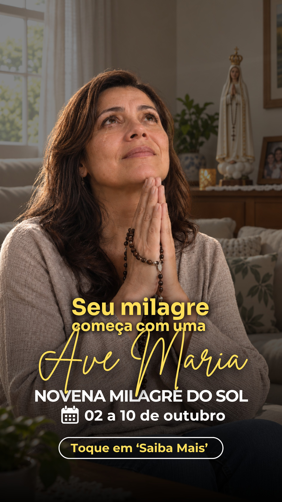
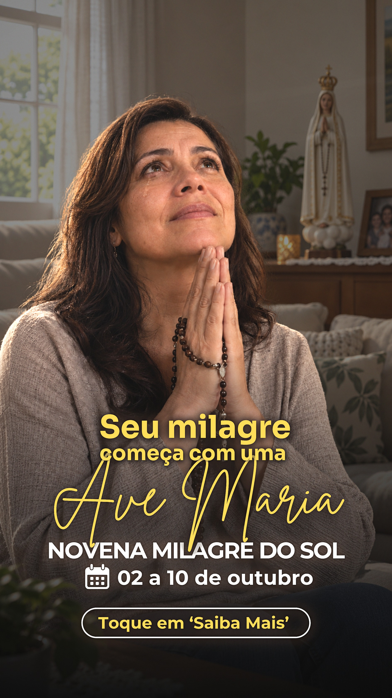

Análise de direção de arte das 12 peças e proposta de acabamento de campanha, com masterização cinematográfica em 8K. O tratamento é fotográfico e de leitura — nenhum texto, número, data, logotipo ou característica física das pessoas foi alterado.
Para aprovação
Arraste para comparar


OriginalTratadaArraste para comparar
A arte de origem tem 1890 px de largura. A masterização entrega um arquivo em 8K com bordas limpas, textura de emulsão coerente na escala final e tipografia re-renderizada — o que o arquivo grande realmente ganha. O que ela não faz é inventar detalhe fotográfico que não existia na captura. Para 8K com detalhe real seria preciso acesso de edição ao design no Canva, para exportar direto dos assets originais em alta.
4:5 em 8K · 6143×7680 9:16 em 8K · 4320×7680 4:5 PNG nativo 9:16 PNG nativo
Layout tratado no Canva Layout original no Canva
No 4:5 esta é a única peça da série sem horário (20H) e sem a assinatura do YouTube, que aparecem em todas as outras. Para uma campanha que roda em conjunto, isso cria um ruído de consistência — e o horário é informação de conversão. Não incluí porque implicaria acrescentar conteúdo novo; fica registrado para sua decisão.
Notas atribuídas por conceito, hierarquia visual, qualidade fotográfica, legibilidade em tela de celular e credibilidade da cena. A coluna “depois” é a projeção com o mesmo tratamento aplicado — os limites de cada peça estão anotados.
| Peça | Formato | Antes | Depois | Diagnóstico dominante |
|---|---|---|---|---|
| 1. Seu milagre começa com uma Ave Maria | 4:5 | 7,0 | 8,6 | Sombra chapada e dominante âmbar; manuscrito cruzando as mãos. |
| 1. Seu milagre começa com uma Ave Maria | 9:16 | 7,3 | 8,7 | Mesma cena, respiro melhor; ganha com recuperação de sombra. |
| 2. “Em outubro farei um milagre” | 4:5 | 6,5 | 7,8 | Elegante e a única com assinatura Tarde com Maria, mas sem ancoragem tonal: 0% de área escura faz a peça sumir no feed. |
| 2. “Em outubro farei um milagre” | 9:16 | 5,8 | 7,2 | Vazio grande no miolo; hierarquia achatada. Limite é de layout, não de tratamento. |
| 3. Qual é o milagre que você mais deseja? | 4:5 | 8,0 | 9,2 | Melhor conceito da série: a enquete faz o público se projetar. Trava na legibilidade das opções sobre a colcha clara. |
| 3. Qual é o milagre que você mais deseja? | 9:16 | 7,8 | 9,0 | Mesma força; cena escura demais (mediana 35) esconde o conflito ao fundo. |
| 4. Está precisando de um milagre? | 4:5 | 6,8 | 8,2 | Duotone azul saturado achata a emoção; recorte da mulher com transição perceptível. |
| 4. Está precisando de um milagre? | 9:16 | 6,5 | 8,0 | Colagem superior ilegível no formato alto. |
| 5. …a uma oração de distância | 4:5 | 6,5 | 8,4 | Pior legibilidade da série: serifada branca sobre blusa branca. Detalhe ótimo: o terço na mão dela. |
| 5. …a uma oração de distância | 9:16 | 6,3 | 8,2 | Título de 9 palavras em 5 linhas rouba o olhar do rosto. |
| 6. Já tentou de tudo… | 4:5 | 7,0 | 8,5 | Caixa vermelha dá força, mas fundo azul e frente quente parecem dois mundos colados. |
| 6. Já tentou de tudo… | 9:16 | 6,2 | 8,1 | 25% da peça é preto sem informação; a faixa inferior come a cena. |
Média da série: 6,8 → 8,4. O conjunto tem conceito acima da média — o que faltava era acabamento fotográfico e disciplina de legibilidade em tela pequena.
{kind=link}
{kind=link}
{kind=link}
{kind=link}